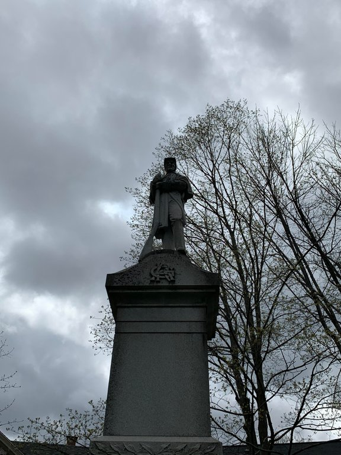

SCP-011

- Item nº:
- SCP-011
- Classe do objeto:
- Safe
Procedimentos Especiais de Contenção:
O item SCP-011 e a área ao seu redor devem ser limpos uma vez por dia. Por motivos de segurança, a limpeza deve começar pelo menos 30 minutos após o pôr do sol. A limpeza deve ser sempre feita por no mínimo duas (2) pessoas, que também são aconselhadas a anotar qualquer coisa incomum sobre o item ou os detritos recolhidos. Em uma situação em que o item não possa ser limpo por mais de dois (2) dias, os moradores locais devem ser contatados e instruídos a não se aproximar do item.
[Procedimentos de contenção anulados em 2004]
Descrição:
O SCP-011 é uma estátua memorial da Guerra Civil localizada em Woodstock, Vermont. A estátua é a imagem de um jovem soldado segurando um mosquete ao lado do corpo e é esculpida em granito extraído na região. Ocasionalmente, observou-se o SCP-011 levantando o mosquete para o céu para atirar em pássaros que tentam pousar ou defecar sobre ele. Os relatos dizem que seus movimentos produzem leves sons de atrito, mas não causam nenhuma falha estrutural. Curiosamente, o tiro é muito parecido com o de uma arma de fogo comum, apesar de as observações indicarem que o item só carrega balas e pólvora de granito no mosquete (que também não sofre dano com o disparo). Apesar de seus esforços, um pouco de fezes consegue atingir o SCP-011, e ele teria ficado angustiado quando acumulou grande quantidade de fezes sobre si, chegando, em algumas raras ocasiões, a atirar em humanos.
Adendo: Quem for designado para a manutenção do SCP-011 deve consultar o documento nº 011-1 para obter instruções.
Documento nº 011-1: Resumo de Manutenção
[Documento arquivado em 2004, acessível ao pessoal com autorização de segurança 2/011 ou superior]
Informações adicionais: A aparente senciência do SCP-011 aumentou desde o primeiro relato de atividade, em 1995. Em 2004, os procedimentos de contenção do item foram abandonados, mas ele continua sob observação constante. Abaixo estão registrados os eventos marcantes de sua atividade.
Linha do tempo:
- 12.03.1995: Um morador de Woodstock relata que os olhos da estátua se moviam, primeiro sinal de atividade.
- 30.09.1995: A estátua dispara o mosquete pela primeira vez.
- 09.10.1995: A estátua começa a atirar em pássaros no céu.
- 25.01.1996: Registro como SCP-011, os procedimentos de contenção começam.
- 14.04.1997: O SCP-011 é observado movendo-se casualmente e olhando ao redor.
- 03.05.2000: Depois que o zelador ████ ████████ grita de brincadeira "Bom tiro!" para o SCP-011, o item responde "Obrigado", com uma voz que teria sido muito humana, primeira fala da estátua.
- 22.10.2001: O SCP-011 tem uma conversa com a zeladora █████████ █████.
- 2001: Os tiros em pássaros param.
- 06.02.2002: A pedido de █████████ █████, o SCP-011 desce de seu pedestal.
- 2003-2004: O SCP-011 atinge um nível humano de autoconsciência.
- 10.11.2004: Os procedimentos de contenção são abandonados, e a custódia do SCP-011 é transferida para █████████ █████.
- 17.05.2005: █████████ █████ relata que o SCP-011 sente atração romântica por ela.
- 29.08.2006: O teste psicológico mais recente relata um QI de 133.